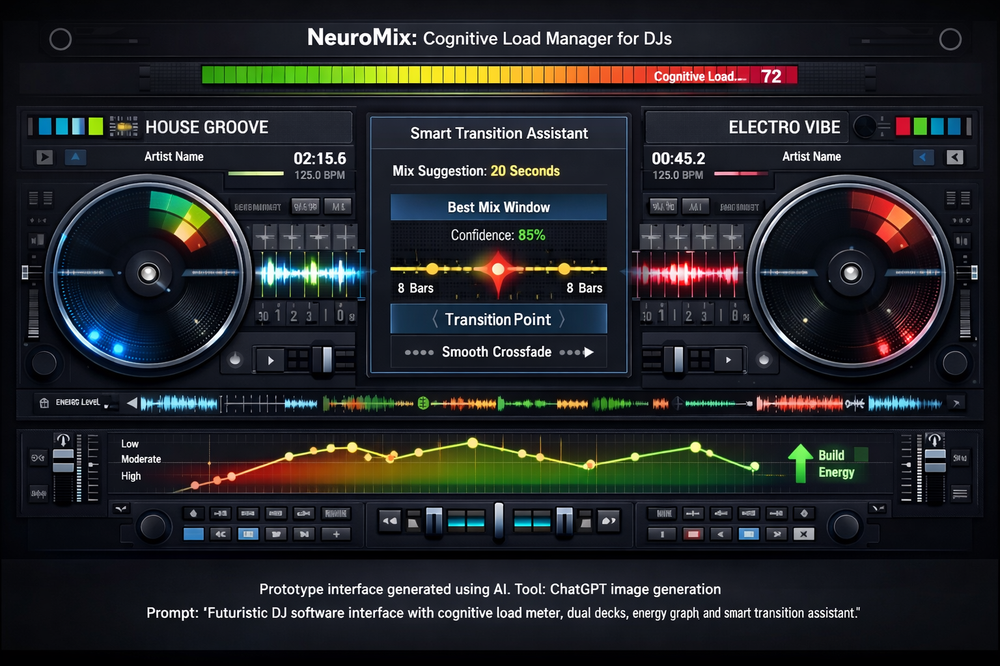

Cognitive Load Manager for DJs
Live DJs must manage multiple complex tasks simultaneously, including beatmatching, track selection, effects control, and crowd monitoring. Existing DJ platforms such as Serato DJ Pro and Rekordbox provide powerful mixing tools but do not monitor the DJ’s cognitive workload or provide real-time performance support.
NeuroMix AI introduces a real-time cognitive load monitoring system for DJs that analyzes performance activity and delivers intelligent feedback to reduce overload, improve timing decisions, and enhance live mixing performance.
This project creates a design-phase prototype of NeuroMix AI, demonstrating a cognitive load meter, an AI transition assistant, and a feedback loop that helps DJs reduce overload and improve live performance. Future development will focus on functional integration and live set testing.
NeuroMix AI targets beginner to professional DJs who perform using digital DJ software—especially mobile DJs, club DJs, and performance DJs who experience cognitive overload during live sets.
Serato DJ Pro and Rekordbox are leading DJ platforms that provide powerful mixing and track management tools. However, they do not monitor the DJ’s cognitive workload or provide AI-driven mental performance support. NeuroMix AI differentiates itself by focusing on real-time cognitive load monitoring and intelligent performance assistance.

Prototype interface generated using AI (ChatGPT/DALL·E). Prompt: “futuristic DJ software interface with cognitive load meter, AI assistant panel, dual decks, energy graph and smart transition assistant.”
DJ Performance Inputs → Activity & Timing Data → AI Cognitive Analysis Engine → Cognitive Load Score → Smart Alerts & Recommendations → Improved DJ Performance
After you upload your video, replace VIDEO_ID below with your YouTube ID.